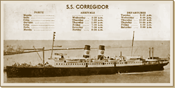

|
j
a v a s c r i p t |
December 17, 1941
Spent a dull morning in the office waiting for cables. The northern front is all quiet. I can’t help thinking it’s the calm before the storm. Went to a meeting at Bachrach’s in the afternoon to discuss First Aid and Evacuation plans, then to the office to pick up a remittance from Pierce. The city was so quiet it was hard to imagine a war was on The SS Corregidor, our best inter-island passenger vessel, struck one of our mines in Manila Bay and sank. PT boats came to the rescue but hundreds drowned, including many prominent Manila residents — a great disaster.

S.S. Corregidor
Hart announced two submarine attacks. “The naval defense of the country is proceeding ‘according to plan,’ says the admiral.” File that under ‘famous last words.’ |
|
|
|
|